Share of sales
Zorali
Now in its second year, our partnership with Zorali directs a share of sales to our work % to confirm. To mark the second year, Zorali released a limited-edition fleece with artwork inspired by Australian coastal landscapes.
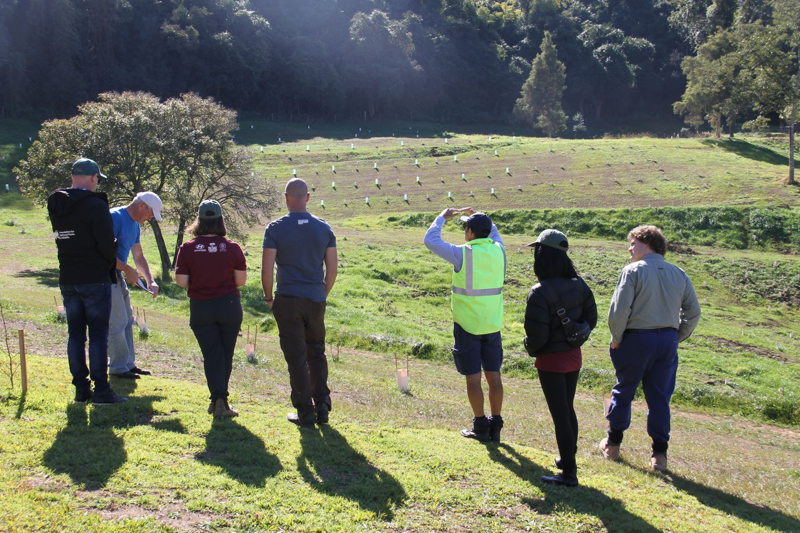
We work with businesses ready to commit serious capital to conservation of national significance, from buying land for new national parks to restoring habitat across whole regions.
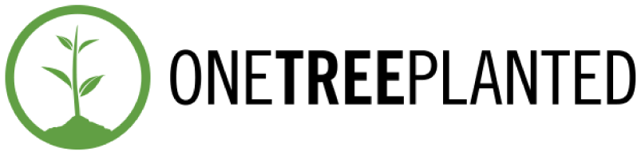
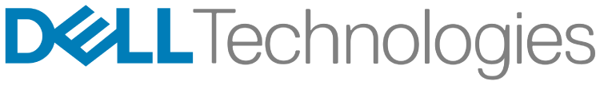
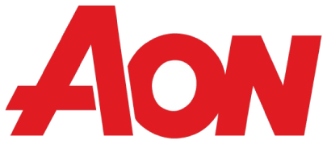
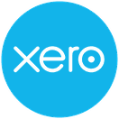
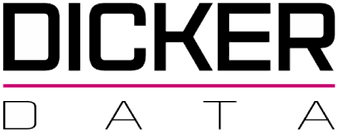
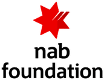
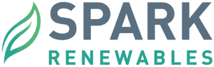
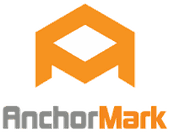
For more than 55 years, partnerships with government, philanthropy and business have helped us buy land, create national parks and restore whole landscapes. These are some of the results, from acquisitions secured with government to six years of restoration with L’OCCITANE.
Figures from our project pages and Impact Report 2025.
Most partners combine two or three of these, and every partnership is shaped around what you want to achieve. Pick one to see what it involves and the work partners are already backing.

Fund an investment-ready project, a threatened species, a whole landscape or a multi-year program, with a clear scope and outcomes from day one.
Good fit for: Businesses with a regional footprint, or a species or place that means something to your brand.
Examples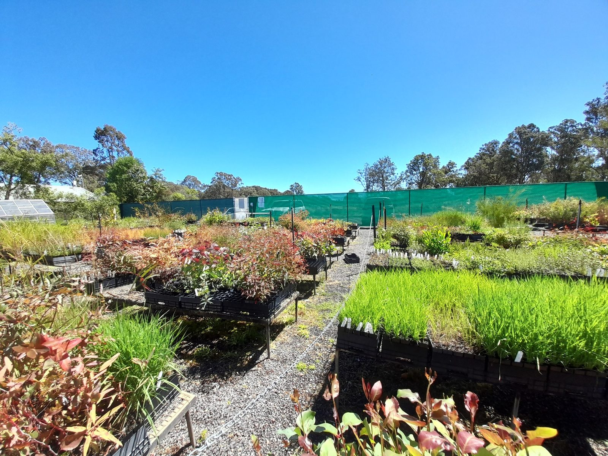
Co-design a conservation program with us, across a priority landscape, across state borders or around a theme that matters to you.
Good fit for: Organisations ready for long-term, reportable impact at scale.
Examples
Explore larger-scale, blended and nature finance opportunities where they are the right fit for the outcome you want. This is emerging work, not an established investment product.
Good fit for: Organisations exploring co-investment alongside government and philanthropy.
Examples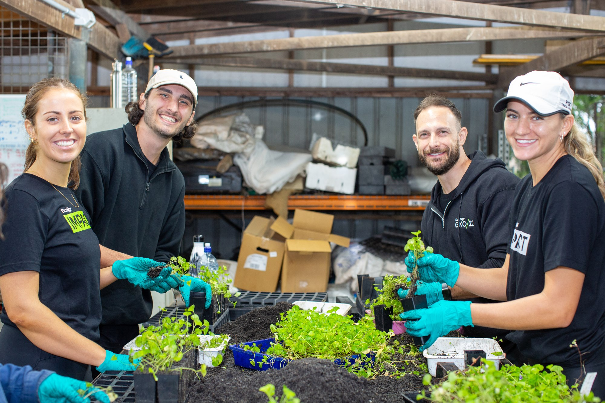
Bring your people and your customers into the work through volunteering, workplace giving, campaigns and employee engagement.
Good fit for: Team, culture and customer engagement goals, alongside a wider partnership.
ExamplesEvery major partnership follows the same path. We secure the land, restore it, help its threatened species recover and connect it to the landscape around it. Our team runs every stage, and your business has a clear role in each one.

We identify land of national significance, bring Traditional Custodians, government and funders to one table, and structure the deal. Your business chooses the opportunity and agrees the scope, budget and milestones with us.
Mundoo Island Station →1,900 ha added to Coorong National Park in 2026.We contract the specialists who do the work, from Traditional Owner rangers to community nurseries, and hold them to agreed milestones. You can see the work on the ground for yourself.
Hindmarsh Island (Kumerangk) →With L’OCCITANE, we are restoring a Ramsar-listed wetland in South Australia.We track ecological, financial and partnership outcomes as threatened species recover, and you receive regular progress updates along the way.
Curb Wombat Mange Program →18,582 treatments delivered with NSW National Parks and Wildlife Service.We join protected areas into larger landscapes, publish the results and scope the next phase with you, so the outcome is something your business can stand behind in its own reporting.
Remarkable Southern Flinders →Four reserves joined into one 30,000 ha park on Nukunu Country.Back one stage or the whole journey. We will show you the opportunities that are ready now.
Ask about current opportunities →What began after the 2019–20 bushfires as a promise to plant one million trees is now one of Australia’s largest community-led nursery restoration programs. We reached the millionth tree in 2024 and have set our sights on nine million by 2030. Partners fund the seed collection, nurseries and planting that restore habitat at the scale of whole regions.
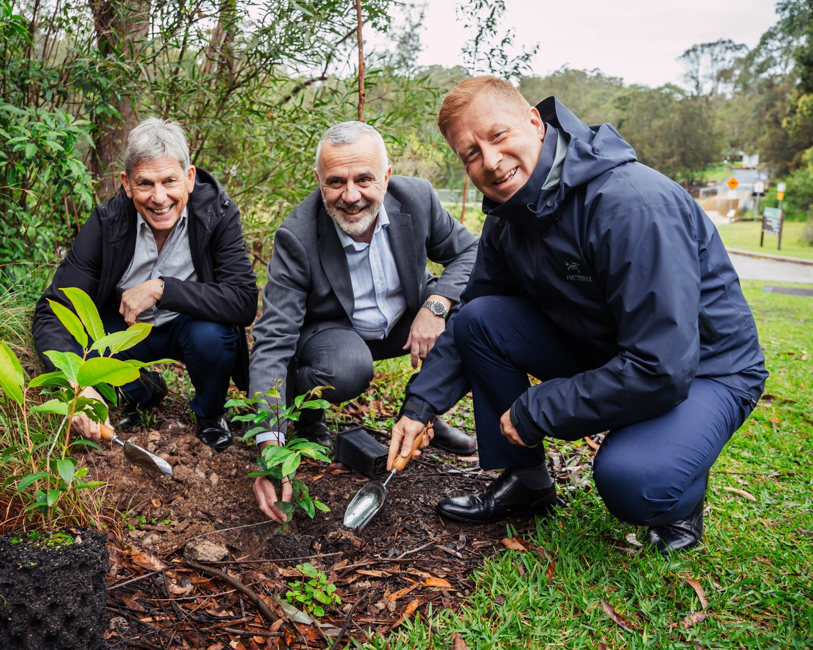
After the 2019–20 bushfires, L’OCCITANE Australia wanted to help put the landscape back. In July 2020, through the L’OCCITANE Ecosystem Restoration Fund, they joined our mission to plant one million trees and helped fund our first Bushfire Recovery Nurseries.
Alongside One Tree Planted, L’OCCITANE is one of the key partners behind a program that reached its millionth tree in 2024 and has restored more than 2,500 hectares of critical habitat. Six years on, the partnership is restoring a Ramsar-listed wetland on Hindmarsh Island (Kumerangk) in South Australia.
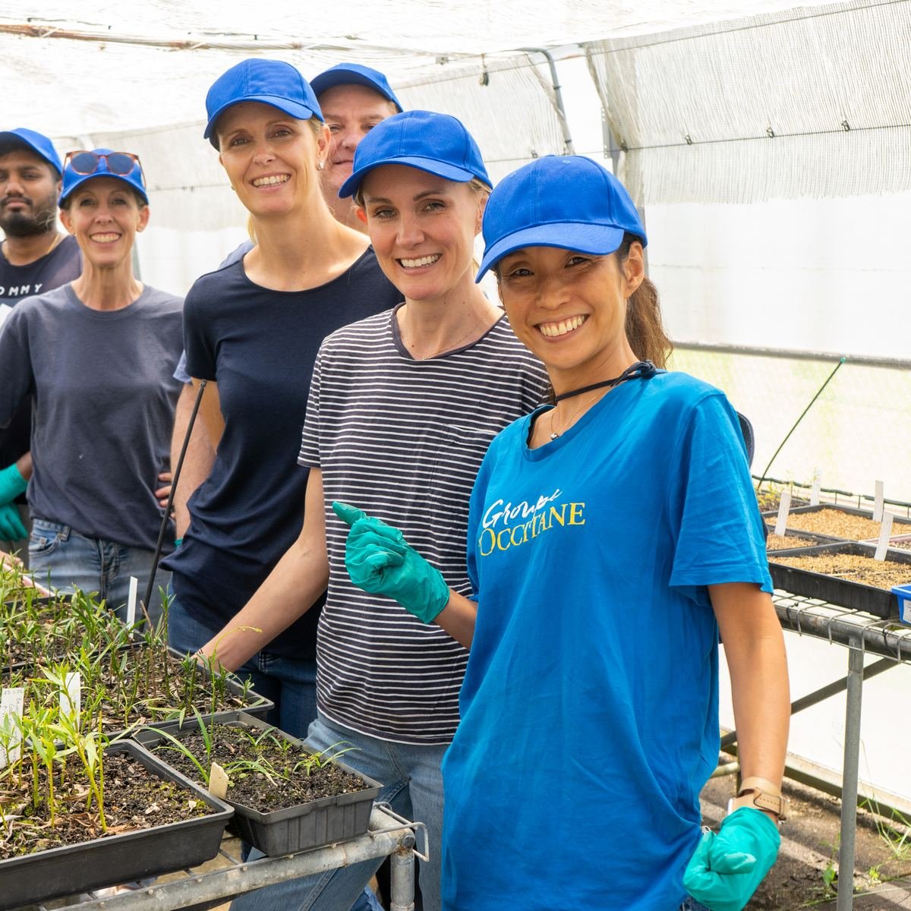
“The key for us was to identify an environmental program partner that was genuinely aligned to our corporate value of respecting biodiversity. FNPW has a long track record of delivering meaningful sustainability outcomes, and we trust them to achieve measurable results on a national scale.”
Pierre-Emmanuel Joffre, Managing Director, L’OCCITANE Australia
Some partners build conservation into what they sell, so every order, product or campaign adds to the outcome. These partnerships run alongside our major programs and give customers a direct part in the work.
Now in its second year, our partnership with Zorali directs a share of sales to our work % to confirm. To mark the second year, Zorali released a limited-edition fleece with artwork inspired by Australian coastal landscapes.
Dicker Data resellers can add a $1 seedling or a $10 tree to their online order at checkout, and Dicker Data matched reseller donations when the partnership launched, so every order helps fund native planting.
For every bucket of its S2 screws sold (1,000 screws to a bucket), AnchorMark contributes $1 to our tree planting partnership, so a building product helps fund restoration.
We could not find a public description of this partnership. We need the model, the figures and Quercus’s approval before it goes on the page.
Each partner will review and approve how their partnership is described before this page goes live.
Tell us the scale of what you want to achieve, whether that is a land acquisition, a national program or a landscape partnership, and we will brief you on the opportunities that fit.

Email fnpw@fnpw.org.au or call 1800 898 626 and we will help directly.